This codelab will walk you through a level in the Security Innovation CTF that suffers from arithmetic underflow. While modern languages include checks that cause exceptions and program termination when arithmetic overflow or underflow occurs, initial versions of Solidity did not.
What you'll learn
- Identifying arithmetic underflow in smart contracts
- Exploiting the vulnerability to retrieve contract funds
What you'll need
- A functional wallet address in Metamask
- Knowledge of Solidity and smart contracts
- An account on Security Innovation's Blockchain CTF site https://blockchain-ctf.securityinnovation.com
This level contract implements an initial coin offering (ICO) that supports buyer's remorse, something many ICO investors have experienced. Each SI Token can be purchased for 1 ETH minus a small transaction fee. At any time, you may return a token and be refunded 0.5 ETH. The tokens can be purchased and requests for refunds can be made using the web interface of the CTF level.
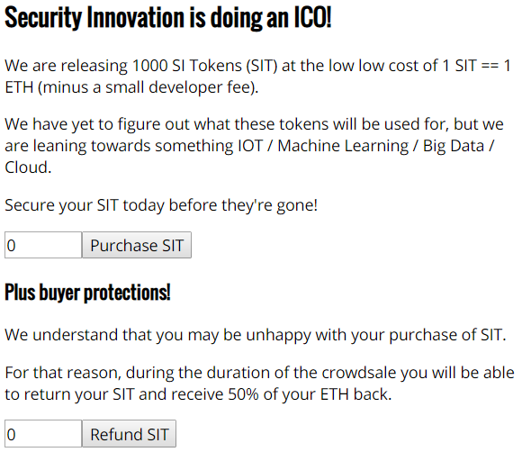
The contract imports an ERC 20 standard token contract. Doing so, allows the token to be exchanged for other tokens, similar to securities. As the contract code indicates, the SIToken contract is a subclass of an actual ERC20 token implementation taken from OpenZeppelin.
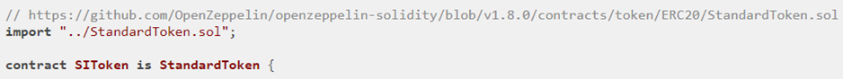
SIToken will serve as a base class for the victim SITokenSale level contract.
Below is the SIToken base contract. As the contract shows, it is using "SafeMath" for operations involving integers. This is an attempt to ensure no overflows and underflows occur undetected. The base contract also defines the token name, its symbol, and the initial supply of tokens (1000 ETH). In the constructor, it then initializes the totalSupply_ variable and the balances mapping with it (these come with the StandardToken implementation).
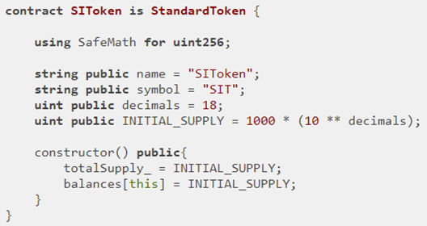
Because SITokenSale wants to be able to charge a commission for token sales and because it also wants to implement buyer's remorse, it defines itself as a subclass of SIToken (and StandardToken). As before, it is also a subcontract of CtfFramework. The contract also contains a value for a commission fee (feeAmount), a value for the amount of ETH in contract (etherCollection), and an address for the owner (developer) of contract.
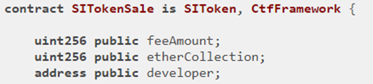
The constructor for SITokenSale is called when you first launch the level by clicking on the UI button:
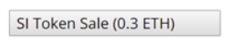
Or when you reset the challenge contract:
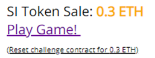
The constructor takes the launcher and player addresses, initializes the CtfFramework base class to authorize access from both, initializes feeAmount to 10 Szabo, sets developer to the creator of contract (msg.sender), then takes the ETH (e.g. 0.3 ETH) sent in contract creation transaction (msg.value) and purchases tokens with it (via purchaseTokens).
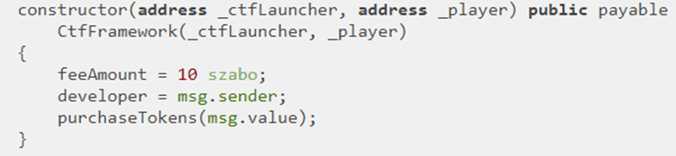
Anytime someone sends SITokenSale ETH, it invokes the fallback function. The function takes the ETH sent (msg.value) and applies it to purchasing tokens (purchaseTokens) for the sender (msg.sender).
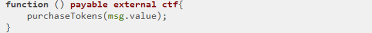
purchaseTokens mimics an ICO. Note that the call is internal, requires ensure ETH has been sent, and that tokens are available. Then, it performs purchase and charges a commission fee that is collected by developer. The fee is deducted from the sender's value and what remains is added to the sender's token balance. The fee is then added to developer's token balance. This results in 1 ETH plus feeAmount (10 Szabo) getting a purchaser 1 token. Finally, both the token supply (balances[this]) is updated as well as the amount of ETH from purchases (etherCollection). Note that etherCollection starts at 0.3 ETH. Our goal is to wipe it out, but we can only seemingly do so by buying tokens at full price and receiving half of that back on a refund!
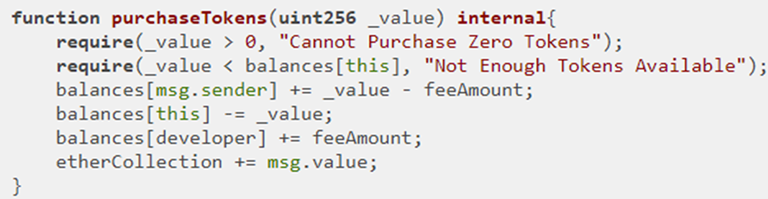
The refundTokens code supports refunds by allowing one to return tokens for half their original price. It does this by first using the transfer() call from the StandardToken base contract (green arrow) to update the token balances mapping before updating the etherCollection and using Solidity's transfer call to refund the ETH to the sender (orange arrow).
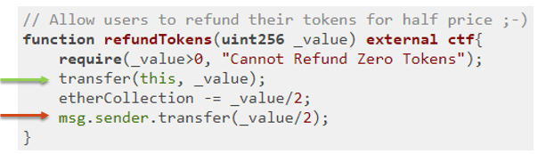
The StandardToken transfer code for updating the balances mapping is shown below:
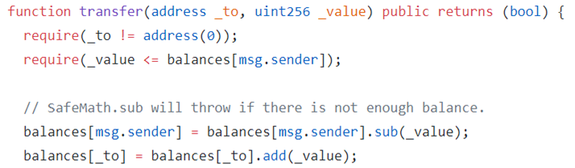
The SITokenSale contract also contains a withdrawEther call to allow the developer account to withdraw all ETH once tokens are completely sold. This is not needed for level completion as it turns out.
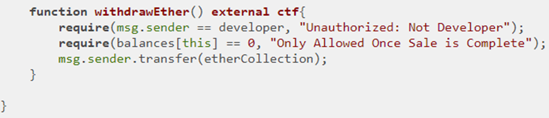
Consider this line in the purchasing of tokens to update the balance of the sender after reducing its value by the commission fee.
balances[msg.sender] += _value - feeAmount;
While the web UI restricts the value of _value to always be more than the feeAmount as shown below.

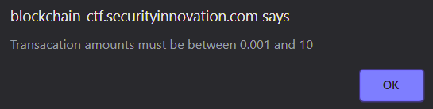
Unfortunately, the contract itself does not perform this check. The assumption that all calls into the SITokenSale contract come via the web UI is a problematic one. One can directly pass the contract a _value smaller than feeAmount to cause an arithmetic underflow. Note that the contract uses internal to limit the purchase of tokens and can not be externally called directly. You can, however, directly pay the fallback function. By doing so, the resulting underflow allows you to own more tokens than you purchased (by a lot!)
Use http://eth-converter.com/extended-converter.html to find out what 9 szabo is in ETH and send 9 szabo to the CTF level contract. Bring up Metamask on your wallet address and click on "SEND".
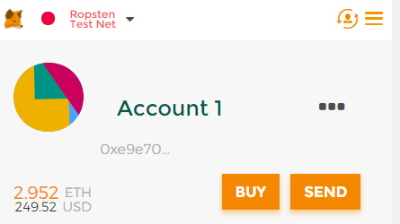
Copy the contract address from the CTF.
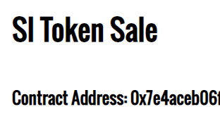
Then, send the contract the tiny amount of ETH to underflow it.
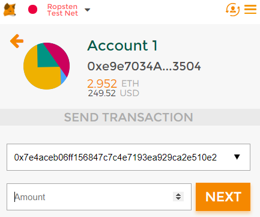
The balanceOf call shown below from StandardToken base class of the contract allows one to see that the underflow has happened on the number of tokens for your account.
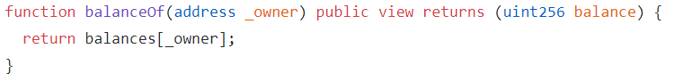
Using MyCrypto, call the function to see what has happened to the balanceOf your wallet address.
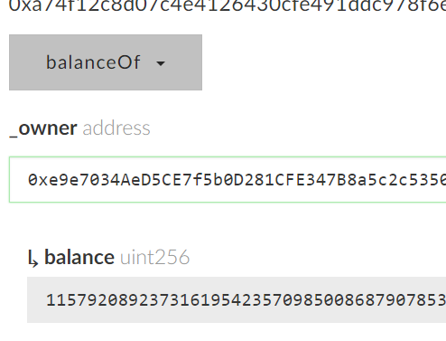
Note, if you get 0, ensure that you are reading from Ropsten. Then read etherCollection and multiply by 2 to calculate the amount to refund to get all of the contract's ETH
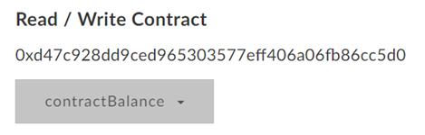
Through MyCrypto, call the contract's refundTokens() function. With twice the amount of the contract's remaining ETH so that it will refund you with the entire balance of etherCollection.
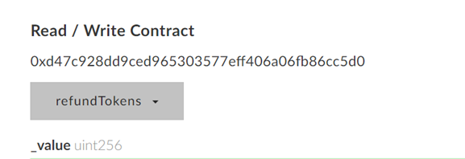
Win the level!
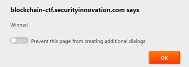
As before,
- Take a screenshot of the transfer of funds from the level contract to your wallet as a result of the
refundTokens()call in Etherscan. Include this screenshot and the level's screenshot showing a 0 ETH balance.
Arithmetic issues such as these are reasons why you must select the programming language you use for mission-critical applications very carefully. It is extremely difficult to write safe code in unsafe languages. In this lab, you identified arithmetic underflow issues and exploited them to compromise a smart contract. The best way to address this issue is to select a safe language from the get-go.